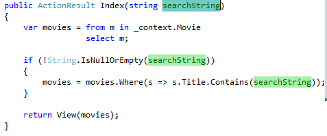
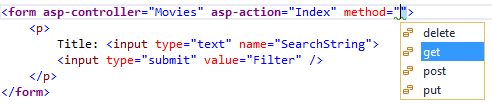
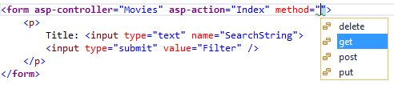

Adding Search¶
In this section you’ll add search capability to the Index action method that lets you search movies by genre or name.
Update the Index action method to enable search:
public async Task<IActionResult> Index(string searchString)
{
var movies = from m in _context.Movie
select m;
if (!String.IsNullOrEmpty(searchString))
{
movies = movies.Where(s => s.Title.Contains(searchString));
}
return View(await movies.ToListAsync());
}
The first line of the Index action method creates a LINQ query to select the movies:
var movies = from m in _context.Movie
select m;
The query is only defined at this point, it has not been run against the database.
If the searchString parameter contains a string, the movies query is modified to filter on the value of the search string, using the following code:
if (!String.IsNullOrEmpty(searchString))
{
movies = movies.Where(s => s.Title.Contains(searchString));
}
The s => s.Title.Contains() code above is a Lambda Expression. Lambdas are used in method-based LINQ queries as arguments to standard query operator methods such as the Where method or Contains used in the code above. LINQ queries are not executed when they are defined or when they are modified by calling a method such as Where, Contains or OrderBy. Instead, query execution is deferred, which means that the evaluation of an expression is delayed until its realized value is actually iterated over or the ToListAsync method is called. For more information about deferred query execution, see Query Execution.
Note
The Contains method is run on the database, not the c# code above. On the database, Contains maps to SQL LIKE, which is case insensitive.
Navigate to /Movies/Index. Append a query string such as ?searchString=ghost to the URL. The filtered movies are displayed.
If you change the signature of the Index method to have a parameter named id, the id parameter will match the optional {id} placeholder for the default routes set in Startup.cs.
app.UseMvc(routes =>
{
routes.MapRoute(
name: "default",
template: "{controller=Home}/{action=Index}/{id?}");
});
You can quickly rename the searchString parameter to id with the rename command. Right click on searchString > Rename.

The rename targets are highlighted.
Change the parameter to id and all occurrences of searchString change to id.

The previous Index method:
public async Task<IActionResult> Index(string searchString)
{
var movies = from m in _context.Movie
select m;
if (!String.IsNullOrEmpty(searchString))
{
movies = movies.Where(s => s.Title.Contains(searchString));
}
return View(await movies.ToListAsync());
}
The updated Index method:
public async Task<IActionResult> Index(string id)
{
var movies = from m in _context.Movie
select m;
if (!String.IsNullOrEmpty(id))
{
movies = movies.Where(s => s.Title.Contains(id));
}
return View(await movies.ToListAsync());
}
You can now pass the search title as route data (a URL segment) instead of as a query string value.

However, you can’t expect users to modify the URL every time they want to search for a movie. So now you’ll add UI to help them filter movies. If you changed the signature of the Index method to test how to pass the route-bound ID parameter, change it back so that it takes a parameter named searchString:
public async Task<IActionResult> Index(string searchString)
{
var movies = from m in _context.Movie
select m;
if (!String.IsNullOrEmpty(searchString))
{
movies = movies.Where(s => s.Title.Contains(searchString));
}
return View(await movies.ToListAsync());
}
@model IEnumerable<MvcMovie.Models.Movie>
@{
ViewData["Title"] = "Index";
}
<h2>Index</h2>
<p>
<a asp-action="Create">Create New</a>
</p>
<form asp-controller="Movies" asp-action="Index">
<p>
Title: <input type="text" name="SearchString">
<input type="submit" value="Filter" />
</p>
</form>
<table class="table">
<thead>
The HTML <form> tag uses the Form Tag Helper, so when you submit the form, the filter string is posted to the Index action of the movies controller. Save your changes and then test the filter.
There’s no [HttpPost] overload of the Index method as you might expect. You don’t need it, because the method isn’t changing the state of the app, just filtering data.
You could add the following [HttpPost] Index method.
[HttpPost]
public string Index(string searchString, bool notUsed)
{
return "From [HttpPost]Index: filter on " + searchString;
}
The notUsed parameter is used to create an overload for the Index method. We’ll talk about that later in the tutorial.
If you add this method, the action invoker would match the [HttpPost] Index method, and the [HttpPost] Index method would run as shown in the image below.
However, even if you add this [HttpPost] version of the Index method, there’s a limitation in how this has all been implemented. Imagine that you want to bookmark a particular search or you want to send a link to friends that they can click in order to see the same filtered list of movies. Notice that the URL for the HTTP POST request is the same as the URL for the GET request (localhost:xxxxx/Movies/Index) – there’s no search information in the URL. The search string information is sent to the server as a form field value. You can verify that with the F12 Developer tools or the excellent Fiddler tool. Start the F12 tool:
Tap the http://localhost:xxx/Movies HTTP POST 200 line and then tap Body > Request Body.

You can see the search parameter and XSRF token in the request body. Note, as mentioned in the previous tutorial, the Form Tag Helper generates an XSRF anti-forgery token. We’re not modifying data, so we don’t need to validate the token in the controller method.
Because the search parameter is in the request body and not the URL, you can’t capture that search information to bookmark or share with others. We’ll fix this by specifying the request should be HTTP GET. Notice how intelliSense helps us update the markup.
 

Notice the distinctive font in the <form> tag. That distinctive font indicates the tag is supported by Tag Helpers.
Now when you submit a search, the URL contains the search query string. Searching will also go to the HttpGet Index action method, even if you have a HttpPost Index method.

Adding Search by Genre¶
Add the following MovieGenreViewModel class to the Models folder:
using Microsoft.AspNetCore.Mvc.Rendering;
using System.Collections.Generic;
namespace MvcMovie.Models
{
public class MovieGenreViewModel
{
public List<Movie> movies;
public SelectList genres;
public string movieGenre { get; set; }
}
}
The move-genre view model will contain:
- a list of movies
- a SelectList containing the list of genres. This will allow the user to select a genre from the list.
movieGenre, which contains the selected genre
Replace the Index method with the following code:
public async Task<IActionResult> Index(string movieGenre, string searchString)
{
IQueryable<string> genreQuery = from m in _context.Movie
orderby m.Genre
select m.Genre;
var movies = from m in _context.Movie
select m;
if (!String.IsNullOrEmpty(searchString))
{
movies = movies.Where(s => s.Title.Contains(searchString));
}
if (!String.IsNullOrEmpty(movieGenre))
{
movies = movies.Where(x => x.Genre == movieGenre);
}
var movieGenreVM = new MovieGenreViewModel();
movieGenreVM.genres = new SelectList(await genreQuery.Distinct().ToListAsync());
movieGenreVM.movies = await movies.ToListAsync();
return View(movieGenreVM);
}
The following code is a LINQ query that retrieves all the genres from the database.
IQueryable<string> genreQuery = from m in _context.Movie
orderby m.Genre
select m.Genre;
The SelectList of genres is created by projecting the distinct genres (we don’t want our select list to have duplicate genres).
movieGenreVM.genres = new SelectList(await genreQuery.Distinct().ToListAsync());
Adding search by genre to the Index view¶
@model MovieGenreViewModel
@{
ViewData["Title"] = "Index";
}
<h2>Index</h2>
<p>
<a asp-action="Create">Create New</a>
</p>
<form asp-controller="Movies" asp-action="Index" method="get">
<p>
<select asp-for="movieGenre" asp-items="Model.genres">
<option value="">All</option>
</select>
Title: <input type="text" name="SearchString">
<input type="submit" value="Filter" />
</p>
</form>
<table class="table">
<tr>
<th>
@Html.DisplayNameFor(model => model.movies[0].Genre)
</th>
<th>
@Html.DisplayNameFor(model => model.movies[0].Price)
</th>
<th>
@Html.DisplayNameFor(model => model.movies[0].ReleaseDate)
</th>
<th>
@Html.DisplayNameFor(model => model.movies[0].Title)
</th>
<th></th>
</tr>
<tbody>
@foreach (var item in Model.movies)
{
<tr>
<td>
@Html.DisplayFor(modelItem => item.Genre)
</td>
<td>
@Html.DisplayFor(modelItem => item.Price)
</td>
<td>
@Html.DisplayFor(modelItem => item.ReleaseDate)
</td>
<td>
@Html.DisplayFor(modelItem => item.Title)
</td>
<td>
<a asp-action="Edit" asp-route-id="@item.ID">Edit</a> |
<a asp-action="Details" asp-route-id="@item.ID">Details</a> |
<a asp-action="Delete" asp-route-id="@item.ID">Delete</a>
</td>
</tr>
}
</tbody>
</table>
Test the app by searching by genre, by movie title, and by both.